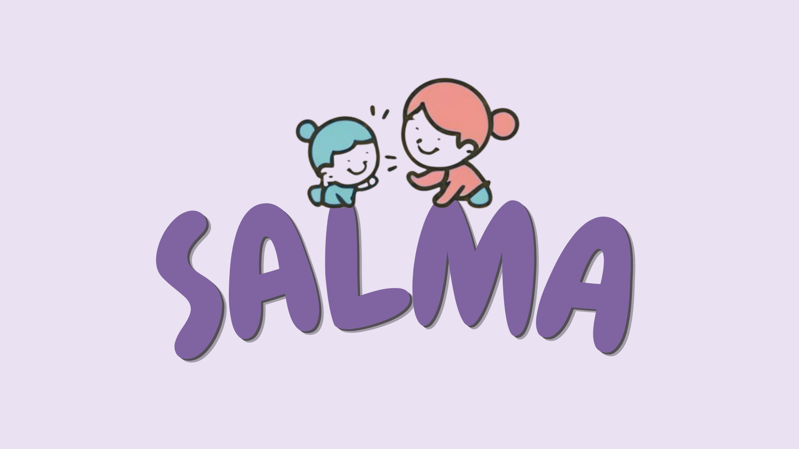

SALMA - Babysitting And Childcare Service Platform

SALMA is a conceptual mobile application designed to support working parents by providing a safe,
flexible, and reliable babysitting
service. The platform allows parents to search for babysitters, view detailed profiles, book sessions,
and complete payments securely.
The project focuses on user trust, safety, and simplicity, inspired by real emotional experiences and
the long-lasting impact of
caregivers in children’s lives. The system was designed with verified identities, clear workflows, and
scalable architecture to ensure
reliability and future expansion.
This project includes full system analysis, UML diagrams, UI design, and architectural planning,
demonstrating both technical and
user-centered design skills.
Completed: